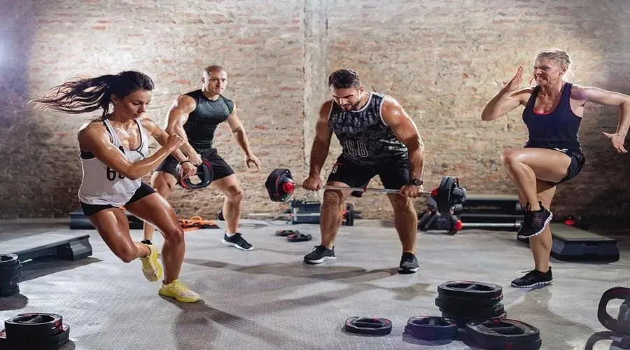

Two Fitness Concepts To Improve Your Squash
Back in July, I wrote an article entitled “Are you Fit Enough For Squash” and in it I obviously talked about fitness. Today I want to introduce two fitness concepts that can get you fitter without leaving the court!
Not everybody wants to do fitness work in addition to playing squash. The phrase “Don’t play squash to get fit, get fit to play squash” is a great soundbite but quite possibly counter-productive. Did we scare people off who thought that just playing squash wasn't enough and they would have to do more training? I’m a great believer in people playing squash because they enjoy it, but also because it’s part of their exercise routine. You DO NOT have to get fit to play squash – just play squash.
Come on everybody - work hard!
However, there are players who are more ambitious, more dedicated and more competitive – perhaps you are one of those people? You are reading this, right? So, here are two fitness concepts that anybody can use to get fitter, improve their squash and add something new to their game.
High Intensity Interval Training (HIIT)
When you think of HIIT, what image comes to mind? Maybe a group of people each at a “station” performing exercise for a set period of time, followed by a set rest period. Maybe it’s running on a track, for a set distance, then walking for a set distance. The essence of HIIT is hard work, followed by a rest. And when you think about it, that’s very similar to squash, except instead of a set time, it’s a rally.
So why not take that concept one step further and actively include it in your practice matches? Depending you your current fitness level, aspirations and/or your opponent, play two rallies at the highest intensity possible, followed by 2 rallies when you play slower. Essentially, it’s very hard work, followed by easier work.
Now clearly, a match is not as fixed as an exercise station. Your opponent my run you around for a few rallies and then vice versa, but by actively and consciously trying to control the speed or intensity of play, you not only take control of your fitness training during a match, but you also assert control tactically.

I am sure these players would benefit from some HIIT.
Remember, this is a training method, not a secret tactic to suddenly beat people you haven’t beaten before. Don’t expect anything except the feeling of taking control and the thrill of knowing you are the master of your destiny. Okay, that last phrase is a little exaggerated, but you get my point – win or lose, you will be using each and every moment on court to your advantage.
Last point, I did say “depending on your current fitness level..“, so be sure to adjust the number of high intensity rallies and low intensity ones to suit your needs. You have two ways to do this: increase the number of high intensity rallies and/or either increase or decrease the number of low intensity rallies.
Fartlek Training
Fartlek is Swedish for “speed play”, and in some ways is very similar to HIIT, except that it is more free form. For example, the way I was taught to sue it was if you go for a run, every time a car passes you, sprint for 15 seconds, or every time you come to a bend run faster around the bend. of course, a LOT depends on you route etc, but the key is to have random elements effect your speed.
It’s quite possible you have never heard of Fartlek because it dropped out of use for a while, but I believe it is becoming more popular again. Its use for squash should be clear: when something happens, work harder. Okay, maybe not that clear, but allow me to explain.
You choose a shot or score or some other random action and for that rally and maybe the next, you play at a higher intensity. In this case, that could be hitting the ball very hard to the back. Your chosen shot could be a backhand boast. So when you opponent hits a backhand boast you try to break the ball by hitting it hard.

I bet Nick matthew has done some Fartlek training.
Perhaps you choose three scores: 3 points, 6 points and 9 points. When the score reaches those, you play harder. Now when I say “3 points”, that could be 1-2, 2-1, 3-0 or 0-3. The same for the 6 and 9 points.
Don’t think that “high intensity” only means smacking the ball as hard as you can, oh no! It could be playing more volleys, keeping the rally going so your lungs want to explode or even running back to the T as fast as possible.
I love the idea of introducing truly random events, so things like somebody shouting on another court, somebody walks past your glass back wall, or watches your game from the balcony. Whatever you have no control over.
Of course every rally, game and match is different, but with Fartlek you use that differentness to your fitness advantage. Each game provides the opportunity to improve your fitness in an unusual way.
Final Thoughts
We all want to be fitter. We all want to have the dedication and motivation to get up early on cold, dark mornings and do the work required, but for many, if not most, that dream is beyond our lifestyle. Finding ways to get fitter don’t require any extra time is truly essential in today’s world, and the two examples above do that. If you already play squash, there is nothing stopping you from trying them, for a few weeks and seeing what happens. Send me an email with your experiences and ways you introduced fartleks into your practice matches.
Continue Reading
• Previous: Can You Swap Playing Hands In Squash?
• Next: Coming Tomorrow
• Random: Take A Chance!
• Popular: What Is Back Corner Circling in Squash?